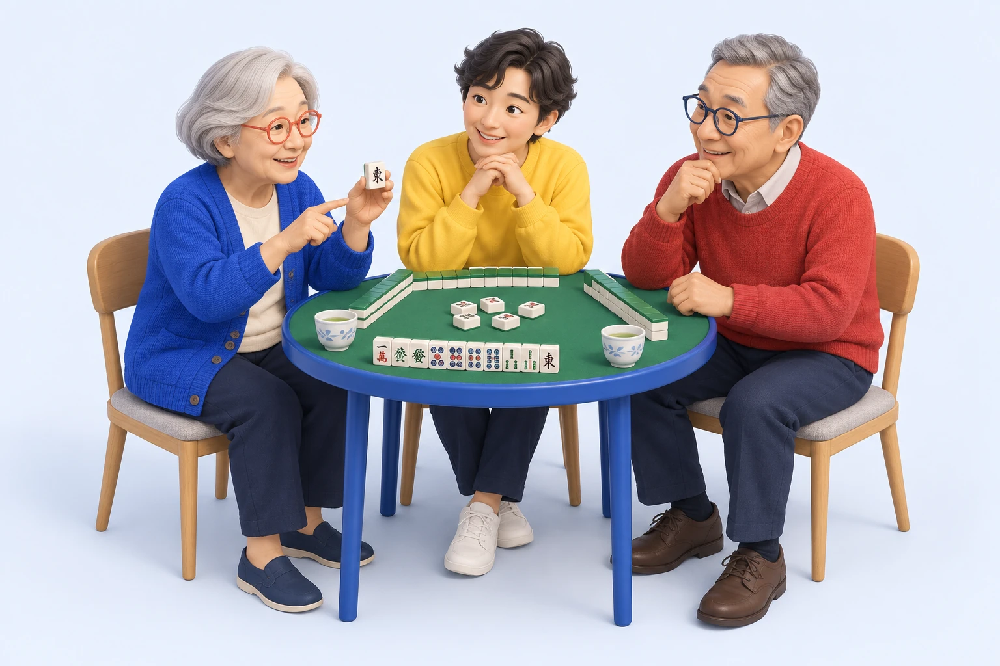

教える日。
昔から得意だったことが、
誰かの新しい楽しみになる。
TOKYO, ZENPUKUJI 東京・善福寺から。
その人の「できる」が、
誰かのうれしいになる。


支える人も、支えられる人も。
今日ここに来てよかったと思える一日を。
SHINING DAYは、東京都杉並区・善福寺の実家を起点に、小さなデイサービスと、地域で支え合う仕組みをつくるプロジェクトです。
遊びのルールを教える。話を聞く。誰かを笑わせる。
一人ひとりの「できる」が、自然につながる場所を目指しています。
もちろん、今日は見ているだけでも。
何かをすることが、ここにいる条件にはなりません。
現在は構想・開設準備の段階です。サービスの内容や利用条件は、これから具体化していきます。
勝った。負けた。もう一回。
そのあいだに、いくつもの役割が生まれる。
昔から得意だったことが、
誰かの新しい楽しみになる。
知らなかったことを知る。
年齢を越えて、先生が見つかる。
話を聞く。お茶を飲む。
自分のペースで過ごしていい。
登場する人物・場面は、構想を伝えるためのオリジナルイラストです。
カードをめくると、もうひとつの顔。
あなたにも、思い当たることはありませんか？
この3人は、関わり方を想像するためのキャラクターです。
得意なことがなくても、役割を引き受けなくても。ここにいる理由は、自由です。
いつもより、よく話す。
今日は、少し疲れている。
遊んでいるとき、話しているときに見える、小さな変化があります。本人の思いを聞きながら、その気づきを必要な支援につなげたい。
記録や共有は、本人への説明と適切な同意を大切に。日常の気づきと専門的な評価を区別し、家族や専門職とつながる体制を考えています。
長年の地域活動から受け継いだ、支え合う温かさ。
その温かさが、誰か一人の頑張りに頼らず続くように。
役割も、費用も、働く人への還元も、一緒に考えていきます。
実家の1階から。楽しみと支援が両立する、小さな場を実証する。
地域の人や事業所と連携し、人が替わっても続く仕組みを考える。
善福寺で学んだことを、別の地域でも、そのまちらしく使える形に。
決まっている方向性
善福寺を起点に、地域で支え合う日常と、持続可能な事業の仕組みをつくります。
これから確認すること
正式なサービス区分、利用条件、定員、人員配置、料金、開業日、運営主体の役割を、行政・専門家と確認しながら具体化します。
「こんな場所があったら」「私なら、こんなことができる」
まだ決まっていないことがある今だから、聞きたい話があります。
このサイトは構想共有用です。利用申込み・採用応募の受付は開始していません。